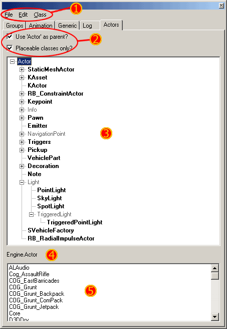

UDN
Search public documentation:
ActorsBrowserReferenceJP
English Translation
中国翻译
한국어
Interested in the Unreal Engine?
Visit the Unreal Technology site.
Looking for jobs and company info?
Check out the Epic games site.
Questions about support via UDN?
Contact the UDN Staff
中国翻译
한국어
Interested in the Unreal Engine?
Visit the Unreal Technology site.
Looking for jobs and company info?
Check out the Epic games site.
Questions about support via UDN?
Contact the UDN Staff
アクタ ブラウザの参照
ドキュメントの概要: Unreal エディタの Actor Class Browser ブラウザの参照。 ドキュメントの変更ログ: Jason Lentz (Demiurge Studios?) により作成。 Richard Nalezynski? により管理。はじめに
Actor Class ブラウザでは、Unreal Engine ビルド内で使用可能なアクタを確認することができます。アクタは UnrealScript? クラス (ときには native の C++ コードも使用して) から、属性、振る舞いおよび状態を定義するロジックに基づいて作成されます。これらのアクタはレベル内で頻繁に使用されます。ワールド レベルに存在するものは、ライト、静的メッシュおよび Pawn (ポーン) を含めてほぼすべてアクタです。Actor Class ブラウザを開く
Actor Class ブラウザの概要
ブラウザのレイアウト

- - メニュー バー
- - ツール バー
- - アクタツリー
- - 現在のクラス
- - ロードされているクラス
メニュー バー
ファイル
- Open Package (パッケージを開く) - ここから、コンパイルされた UnrealScript? コード (.u パッケージ) を開くことができます。
- Export All Scripts (すべてのスクリプトをエクスポート) - このオプションは、すべてのクラスを UnrealScript? クラスの .uc ファイルにエクスポートし、後からリビルドできるようにします。
ツール バー
- Use Actor as parent? (「Actor」を親として使用？) - このトグルがチェックされていると、下に表示されるアクタ ツリーは ｢アクタ｣ が最高レベルになります。もしチェックされていないと、｢オブジェクト｣ が最高レベルに使われます｡
- Placeable classes only? (配置可能なクラスのみ？) - このトグルをチェックすると、下に配置可能なクラスを持たない配置可能でないクラスはすべて、アクタ ツリーから刈り込まれます｡配置可能なアクタは、アクタ ツリー内で太字で表示されます｡